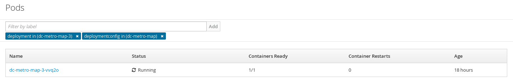
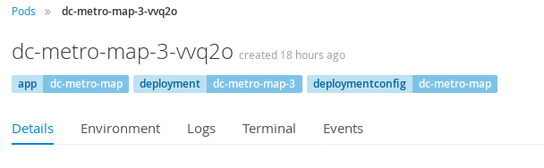
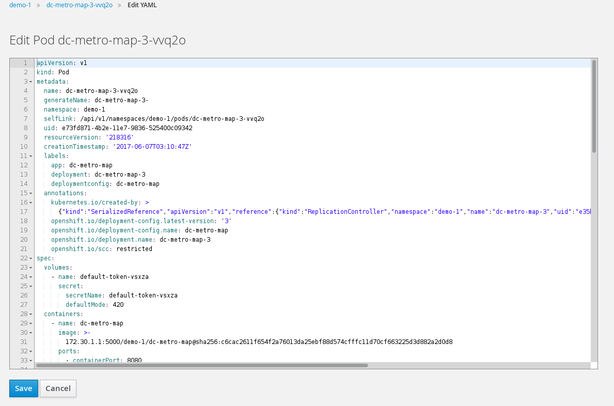

This is a pretty simple lab, we are going to explore labels. You can use labels to organize, group, or select API objects.
For example, pods are "tagged" with labels, and then services use label selectors to identify the pods they proxy to. This makes it possible for services to reference groups of pods, even treating pods with potentially different docker containers as related entities.
In a previous lab we added our web app using a S2I template. When we did that, OpenShift labeled our objects for us. Let's look at the labels on our running pod.
Goto the terminal and try the following:
$ oc get pods
$ oc describe pod/<POD NAME> | more
You can see the Labels automatically added contain the app, deployment, and deploymentconfig. Let's add a new label to this pod.
Add a label
$ oc label pod/<POD NAME> testdate=4.30.2016 testedby=mylastname
Look at the labels
$ oc describe pod/<POD NAME> | more
Here's a handy way to search through all objects and look at all the labels:
$ oc describe all | grep -i "labels:"
Click "Applications" and then click on "Pods"This is going to show basic details for all pods in this project (including the builders). 
Next let's look at the log for the pod running our application.
Click the pod for the dc metro map webapp (it shoud have a status of Running) Here, at the top, you can see the labels on this pod
Click the "Actions" button, then click "Edit YAML" for the pod
Add a new label into the labels sectionYour updated label will show up in the pod's list.
That's it for this lab. Now you know that all the objects in OpenShift can be labeled. This is important because those labels can be used as part of your CI/CD process. An upcoming lab will cover using labels for Blue/Green deployments. Labels can also be used for running your apps on specific nodes (e.g. just on SSD nodes or just on east coast nodes). You can read more about labels here and here.